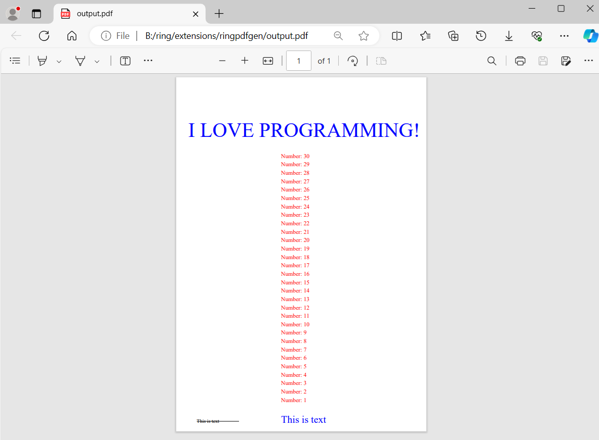
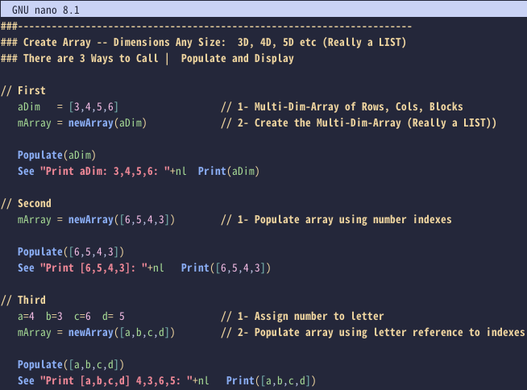

What is new in Ring 1.21
In this chapter we will learn about the changes and new features in Ring 1.21 release.
List of changes and new features
Ring 1.21 comes with the next features!
Ring for Raspberry Pi Pico
Lectures Tracker application
RingPDFGen Extension
Better MatrixLib
Better RingQt
More Samples
Faster Function Call
Faster Arithmetic Operations
Faster Compiler
Reducing Memory Usage
ForEach Keyword
Better Operator Overloading
Ring Syntax Highlighting for nano
New VM Instructions
More Improvements
Ring for Raspberry Pi Pico
In this release we present a new extension that supports Raspberry Pi Pico
Using this extension we can write Ring programs that runs on the RP2040 Microcontroller
For more information check the chapter: Using Ring for Raspberry Pi Pico Microcontroller

Lectures Tracker application
A simple Desktop/Mobile application that connects to a Web API to get some data.
The application is developed using Ring & RingQt.
To test the application
Run ring/applications/lecturestracker/webserver/server.ring
Run ring/applications/lecturestracker/mobileapp/lecturestracker.ring

RingPDFGen Extension
This extension support the PDFGen library
The extension exist in the ring/extensions/ringpdfgen folder
The supported functions and constants exist in the Using RingPDFGen chapter
Example:
load "pdfgen.ring"
cPDFFileName = "output.pdf"
pdf = pdf_create(PDF_A4_WIDTH, PDF_A4_HEIGHT, [
:creator = "My software",
:producer = "My software",
:title = "My document",
:author = "My name",
:subject = "My subject",
:date = "Today"
] )
pdf_set_font(pdf, "Times-Roman")
pdf_append_page(pdf)
pdf_add_text(pdf, NULL, "This is text", 12, 50, 20, PDF_BLACK)
pdf_add_line(pdf, NULL, 50, 24, 150, 24, 0, 0)
pdf_add_text(pdf, NULL, "This is text", 24, 250, 20, PDF_BLUE)
for t=1 to 30
pdf_add_text(pdf, NULL, "Number: " + t, 14, 250, 50+(20*t), PDF_RED)
next
pdf_add_text(pdf, NULL, "I LOVE PROGRAMMING!", 48, 30, 700,PDF_BLUE)
pdf_save(pdf, cPDFFileName)
pdf_destroy(pdf)
system(cPDFFileName)
Output:
Better MatrixLib
The next functions are added to the library
MatrixScalarProjection(U,V) // Scalar Projection A onto B = (A.B) / |B|
MatrixCopyCol(U-Array, Start, End) // Create new smaller V-array from U-array
Example
Load "stdlibcore.ring"
Load "matrixlib.ring"
Func Main()
A = [[ 1],[ 6],[ 18]]
B = [[ 42],[-69],[ 98]]
See "A " MatrixPrint(A)
See "B " MatrixPrint(B)
SP = MatrixScalarProjection(B,A)
See "Scalar projection of B onto A = 73.26 => "+ SP +nl
SP = MatrixScalarProjection(A,B)
See "Scalar projection of A onto B = 10.96 => "+ SP +nl
A = [[ 3],[ 4]]
B = [[ 1],[ 2]]
See "A " MatrixPrint(A)
See "B " MatrixPrint(B)
SP = MatrixScalarProjection(A,B)
See "Scalar projection of A onto B = 4.9193 => "+ SP +nl
Output:
A MatrixPrint: 3x1
| 1 |
| 6 |
| 18 |
B MatrixPrint: 3x1
| 42 |
| -69 |
| 98 |
Scalar projection of B onto A = 73.26 => 73.26
Scalar projection of A onto B = 10.96 => 10.96
A MatrixPrint: 2x1
| 3 |
| 4 |
B MatrixPrint: 2x1
| 1 |
| 2 |
Scalar projection of A onto B = 4.9193 => 4.92
Better RingQt
Qt library is updated from Qt 5.15.16 to 5.15.17
QDateTimeEdit - Added Class Events
The next classes are added to RingQt
QAbstractGraphicsShapeItem
QAudioOutput
QGraphicsAnchor
QGraphicsAnchorLayout
QGraphicsEffect
QGraphicsEllipseItem
QGraphicsGridLayout
QGraphicsItem
QGraphicsItemGroup
QGraphicsLayout
QGraphicsLayoutItem
QGraphicsLineItem
QGraphicsLinearLayout
QGraphicsObject
QGraphicsPathItem
QGraphicsPixmapItem
QGraphicsPolygonItem
QGraphicsProxyWidget
QGraphicsRectItem
QGraphicsSceneContextMenuEvent
QGraphicsSceneDragDropEvent
QGraphicsSceneEvent
QGraphicsSceneHelpEvent
QGraphicsSceneHoverEvent
QGraphicsSceneMouseEvent
QGraphicsSceneMoveEvent
QGraphicsSceneResizeEvent
QGraphicsSceneWheelEvent
QGraphicsSimpleTextItem
QGraphicsSvgItem
QGraphicsTextItem
QGraphicsWidget
QLibraryInfo
QLineF
QModelIndex
QRectF
QRegExp
QStyleOptionGraphicsItem
QTransform2
QTransform3
QVersionNumber
More Samples
The next samples are added to the ring/samples folder
ring/samples/General/NetworkFlow/Matrix-Networks.ring
ring/samples/General/Matrix/MatrixThreePointsOnCircle.ring
ring/samples/Drawing/PolarCartesian/AA-Draw-Polar-Cartesian.ring
ring/samples/UsingMatrixLib/60-Matrix-Test-Scalar-Projection.ring
ring/samples/UsingMatrixLib/61-BundlesOfRice.ring
ring/samples/UsingQt/GraphicsView/graphicsview.ring
ring/samples/UsingQt/Painter/test3.ring
Faster Function Call
We improved how Ring VM manage the functions scope/arguments through pre-allocation to provide performance improvements.
As a result, the stars animation sample works at 5400 FPS (instead of 2350 FPS in Ring 1.20)
Results:
Ring 1.21 --> 5400 FPS
Ring 1.20 --> 2350 FPS
Ring 1.19 --> 2350 FPS
Ring 1.18 --> 500 FPS

The waving cubes sample works at 170 FPS (instead of 40 FPS in Ring 1.20)
Tip
This is faster than the Python 3.11 version which works at 85 FPS
Note
The C version of this sample works at 480 FPS

Faster Arithmetic Operations
We introduced some new VM instructions that merge common instructions into one.
This lead to speed improvements with respect to arithmetic operations.
Example:
decimals(3)
t1=clock()
for t=1 to 1_000_000 r=max(t,t*2) next
t2 = clock()
? r
? (t2-t1)/clockspersecond()
Output:
2000000
0.073
Results:
Time using Ring 1.21 --> 73 ms
Time using Python 3.11 --> 83 ms
Time using VFP 9.0 SP2 --> 94 ms
Time using Python 2.7 --> 108 ms
Time using Harbour 3.2 --> 110 ms
Time using Ring 1.20 --> 244 ms
Faster Compiler
This release provides better performance when compiling large projects
These projects could have huge number of classes and methods
For example, PWCT2 compile time is reduced from 1100 ms to 790 ms
Also, SoftanzaLib compile time is reduced from five seconds to one second
Reducing Memory Usage
We did the next updates to reduce the memory usage
The ByteCode registers count is reduced from four to two
Setter/Getter/OperatorOverloading - Don’t use ring_vm_eval()
Using GC functions when using strings in the VM stack
Using the VM Stack when passing arguments to C functions
Reducing memory required by RING_API_REGISTER to support C functions
The pre-allocated memory pool items count is reduced from 1M to 100K
ForEach Keyword
This release support using the ForEach keyword in For-in loops
Example:
aList = 1:10
ForEach x in aList
? x
Next
Better Operator Overloading
We support operator overloading from the first release of the Ring language
When using an object inside an expression and this object define the operator method, this method will be called if the object comes first.
object operator value
myobj + 10
myobj + "test"
myobj + [1,2,3]
In this release we support that the value could come first before the object and the operator() method will be called but the letter ‘r’ will comes before the operator (i.e. r+ instead of +)
Example:
? f(2)
mylist = new List([1,2,3])
f(mylist).print()
func f x
return 2+x*x # Here 2 comes before x and x could be an object
class List
aList = []
func init vValue
aList = vValue
func operator cOperator,vValue
if cOperator = "r+"
cOperator = "+"
ok
switch cOperator
on "+"
if isNumber(vValue) {
for t in aList
t += vValue
next
but isObject(vValue)
for t = 1 to len(aList)
aList[t] += vValue[t]
next
ok
on "*"
if isNumber(vValue) {
for t in aList
t *= vValue
next
but isObject(vValue)
for t = 1 to len(aList)
aList[t] *= vValue[t]
next
ok
on "[]"
return aList[vValue]
on "len"
return len(aList)
off
return self
func print
? aList
Output:
6
3
6
11
Note
the numbers(3,6,11) are the result of applying the function f to the list items [1,2,3]
Ring Syntax Highlighting for nano
Check the folder: ring/tools/editors/nano
New VM Instructions
The next instructions are added to the Ring Virtual Machine
ICO_STEPFROMREG - Set the For-Loop step value
ICO_PUSHNL - Push new line to the stack
ICO_LISTITEMN - Add number to the current list
ICO_LISTITEMC - Add string to the current list
ICO_RETURNN - Return a number from a function
ICO_PUSHARG - Quickly access function arguments
ICO_PUSHNTHENJUMP - Push number to the stack then jump
Also, we added the next arithmetic instructions
ICO_SUMN
ICO_SUBN
ICO_MULN
ICO_DIVN
ICO_MODN
ICO_POWN
More Improvements
Ring Notepad - Toolbar - Better icons
AddAttribute() - Produce runtime error if the attribute is already defined
AddMethod() - Produce runtime error if the method is already defined
RingInternetLib - Set CURLOPT_USERAGENT in Download() function
RingRayLib - RayLib version is updated from 2.5 to 5.0
Ring API - Implementation through functions that get a pointer to the VM structure
Better scripts for building Ring on Linux
Ring Compiler - Add new lines between error messages
Ring Compiler - Check argument duplication during function definition
Ring Compiler - Call command - Better error messages
Ring Compiler - ICO_SETPROPERTY - No arguments are required
Ring Compiler - ICO_NEWLINE instruction - Check if the previous instruction is ICO_NEWLINE
Ring Compiler - Don’t use ICO_BEFOREEQUAL instruction for the common case (Equal)
Ring Compiler - Don’t pass spaces inside multi-characters operators
Ring Compiler/VM - String structure - Store small strings in the structure
Ring VM - Better support for list items of new objects when using lists during defintion
Ring VM - List() function - Use blocks only if the list size is greater than 30 items
Ring VM - Better code when deleting lists created using the List() function
Ring VM - Set the loop variable when using for-in and NULL string
Ring VM - Better implementation when using the for-in loop and new objects
Ring VM - Better implementation for deleting the item reference inside the for-in loop variable
Ring VM - Check the sub list size when using string index (The size must be two [:key = value])
Ring VM - ring_vm_freetemplists() - Avoid unnecessary lock/unlock when using threads
Ring VM - Low level function - ringvm_codelist() - Better implementation
Ring VM - File vmthreads.c renamed to vmthread.c
Ring VM - FuncCall structure - Removed unused member (nTempMemSizeAtStart)
Ring VM - ring_vm_stepnumber() and ring_vm_sum() - Use: RING_VM_RETURNIFACTIVECATCH
Ring VM - ring_state_runcode() - Reset pVM->nPC to instructions count before code eval/execution
Ring VM - Hash Table - Better performance when using many variables
Ring VM - Object Attributes - Better performance when checking setter/getter methods
Ring VM - BraceError() method - Support using This and runtime error messages
Ring VM - ring_state_free() - Better code for threads support
Ring VM - ring_vm_eval() - Better code for deleting the byte code
Ring VM - ring_vm_eval() - Avoid deleting the code when defining new packages
Ring VM - Eval() - Return NULL (Empty String) if the return command is not used
Ring VM - Produce runtime error when using a negative value in shift operations
Ring VM - ring_vm_createtemplist() implementation - Take in mind the PC and OPCode
Ring VM - Share information about different levels of the memory pool when creating new thread
Ring VM - ICO_SETREFERENCE - Check the variable list size
Ring VM - The ICO_FUNCEXE and ICO_ENDFUNCEXE instructions are removed
Ring VM - The ICO_PRINT and ICO_GIVE instructions are removed
Ring VM - Produce specific runtime error when using Return inside the function parameters
Ring VM - Produce runtime error if the list item is not an object and accessed by dot operator
Ring VM - ring_vm_jumpfor() function - Better code to check if we need to terminate the for loop
File (meta_e.c) is separated to (meta_e.c) and (vminfo.c)